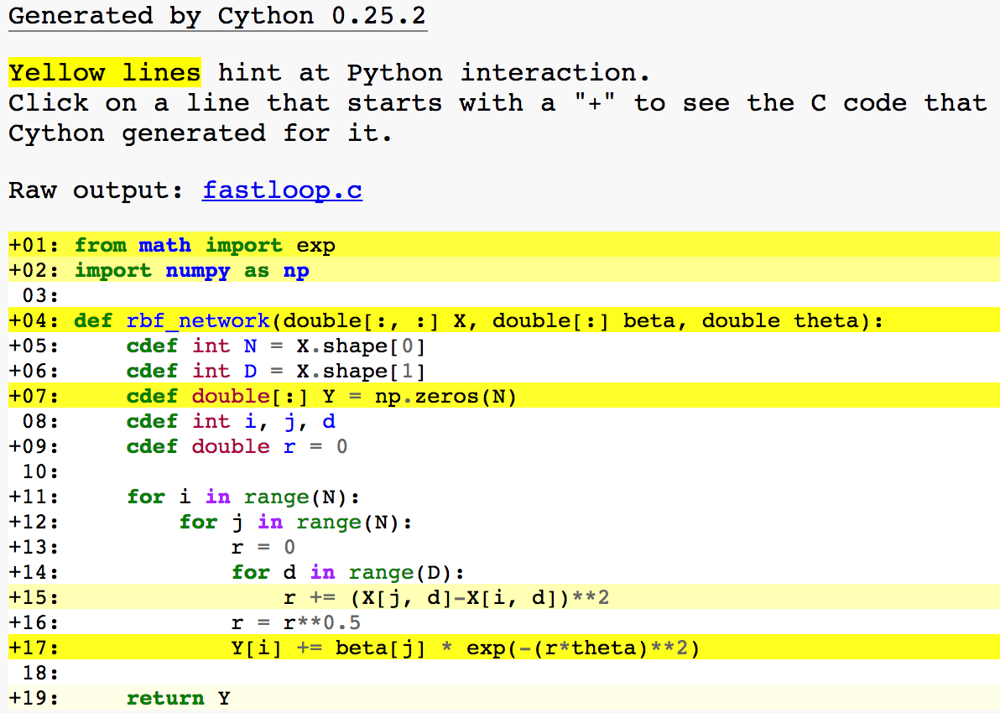
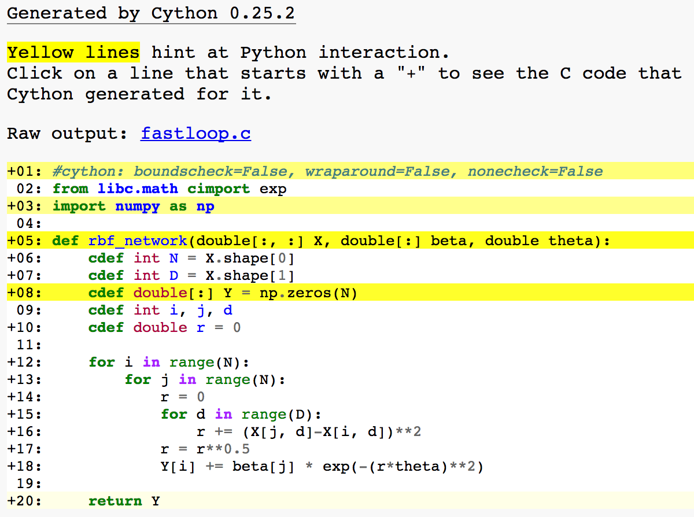

用 Cython 加快 Python 循环速度
本文翻译自该博客
Cython 是 Python 语言到 C 语言的翻译器, 它能让你利用 Python 类似的语法达到接近 C 语言的运行速度。
本文介绍了如何用 Cython 来对单一包含紧凑循环（”tight loops”）的 Python 函数进行加速。在后续的文章中将会介绍关于 Cython 更复杂的应用，例如包含各种函数和类的情况。
什么时候该使用 Cython
你可以选择很多种方案来提升自己 Python 代码的运行速度，各种方案的具体对比请参考 quantecon。当然，你也可以选择另一种更快的语言来实现自己的项目，比如 Julia 或者干脆横下心来用 C 语言。
Cython 静态编译并不是什么前沿技术，这是一项很成熟而且有良好文档支持的技术，能够应付复杂的大型项目。很多 Python 科学计算库后台采用了 Cython 代码，例如 pandas 和 scikit-learn。
例子
我们这里的例程实现了一种径向基函数的近似计算。
$$
\hat{Y}_i = \sum_{j=1}^N \beta_j e^{(-(\theta\left\Vert X_i-X_j\right\Vert)^2)}
$$
这个函数的输入为 $N$ 行 $D$ 列的数组 $X$，长度为 $N$ 的参数数组 $\beta$ 以及一个带宽(‘bandwidth’) 参数 $\theta$，返回长度为 $N$ 的数组 $\hat{Y}$。
Python 循环
下面是对上述函数的一个最初版本的 Python 实现。
|
|
接下来生成一些数据：
|
|
在 IPython 中测算运行时间
|
|
1 loop, best of 3: 5.46 s per loop
果然这些 Python 循环很慢！
scipy.interpolate.Rbf
这种情况下，我们幸运地找到了基于 numpy 的 RBF 实现。
|
|
1 loop, best of 3: 342 ms per loop
现在好多了！但是如果我们想把程序运行得快一点，但却找不到可用的函数库呢？
Cython
我们在文件 fastloop.pyx 中实现 Cython 版本的代码，其内容如下
|
|
目前为止我们做的工作仅仅是在变量名前面增加了一些类型声明。对局部变量，我们采用 cdef 关键字。对 array 数组，我们采用 ‘memoryviews’ 来接受 numpy 数组输入。
值得注意的是，在 *.pyx 文件中，你没有必要对变量进行声明，任何没有声明类型的变量都会留在 Python 中，而不会被翻译为 C 类型。
为了编译上面的 fastloop.pyx 文件，我们需要写一个 setup.py 脚本，内容如下所示
|
|
然后，我们在 terminal 中对 fastloop.pyx 进行编译，命令如下：
|
|
这个命令会生成 C 代码文件 fastloop.c 和一个编译好的 Python 库文件 fastloop.so。
然后我们对这个库文件进行测试
|
|
10 loops, best of 3: 84 ms per loop
果然快了很多，但是我们还有提升空间。Cython 中有很多提升性能的小技巧。下面将介绍第一个，如果我们在 terminal 中输入
|
|
我们将生成一个 fastloop.html 文件，我们在浏览器中打开它。如下图所示

黄色高亮的语句仍然在使用 Python 运行，导致程序变慢。我们优化的目标是避免黄色高亮语句，尤其是在循环中。
我们的第一个问题是依旧在使用 Python 版本的指数函数，应该把它替换成 C 版本的。 math.h 中的大多数函数都包含在了 Cython 的 libc 库中，所以只需要用下面的语句替换 from math import exp
|
|
接下来我们需要增加一些编译指令（compiler directives），最简单的方法是将下面的这行增加到 fastloop.pyx 文件头部
|
|
通过把这些检测关掉，一旦程序出错，你只能得到段错误的提示，而不是像 python 中那种特别详细的信息，因此，最好是先把代码的错误排除干净，再添加该行。
接下来我们可以考虑修改编译器参数（这些属于 C 语言的技巧）。当我们用 gcc 时，最重要的编译选项是 -ffast-math。在我有限的经验中，这可以大大提高程序速度，而不损失可靠性。为了实现这个改变，我们需要修改 setup.py 文件。
|
|
现在再次运行 cython fastloop.pyx -a，我们看到循环中的语句已经不是用 Python 运行的了：

循环之外的黄色语句在这里对程序运行速度没有太大影响（如果需要在循环中多次调用这个函数，那么将会影响速度）。
我们可以重新编译程序，并测速
|
|
10 loops, best of 3: 22.4 ms per loop
本文为 jupyter notebook 转换成 markdown 格式，也可以通过 nbviewer 将 .ipynb 文件转成网页文件。然后再把 <iframe src="your_URL" width="700" height="400"></iframe> 插入文章需要引用的部分。